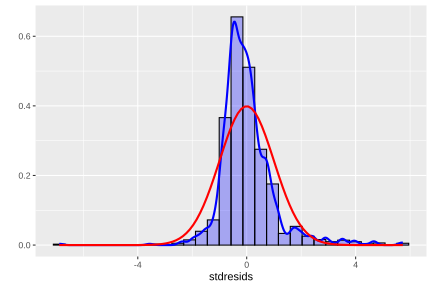
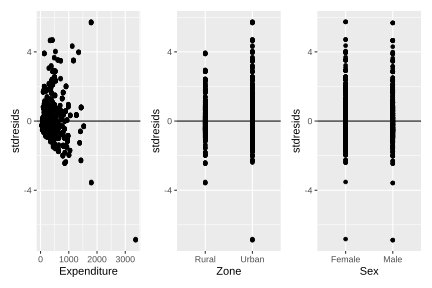
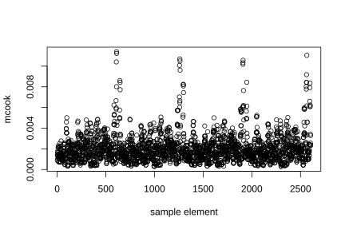
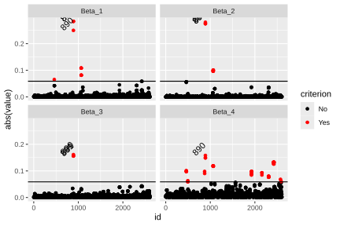
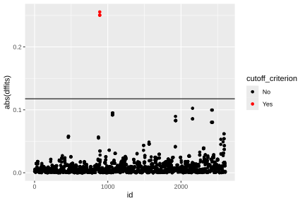

5.4 Model diagnostics
In the analysis of household surveys, the evaluation of a statistical model is an important aspect that guarantees the validity of the inferences. The literature notes that an appropriately specified model depends not only on the selection of covariates, but also on the fulfillment of the assumptions that support the consistency and reliability of the results (Tellez Piñerez & Lemus Polanía, 2015).
For linear regression models applied to complex surveys, it is necessary to examine different aspects related to goodness of fit and the behavior of the errors. As indicated above, these include the explanatory capacity of the model, the normality and homogeneity of the residual variance, the independence of errors, and the possible presence of influential observations or outliers that may affect the estimates.
These checks are particularly important in the context of complex sampling designs, where characteristics such as stratification, clustering, and the use of expansion factors can intensify problems associated with heteroscedasticity, dependence among observations, or sensitivity to extreme values. For this reason, model diagnostics should not be limited to the classical assumptions of regression, but should also incorporate the particularities derived from the survey design. The systematic application of these procedures makes it possible to assess the robustness of the model, strengthen confidence in the inferences, and ensure that the results obtained are representative and useful for both applied social research and public policy analysis.
5.4.1 Coefficient of determination
One of the most widely used measures for evaluating the fit of a regression model is the coefficient of determination, denoted by \(R^{2}\) and also known as the multiple correlation coefficient. This indicator quantifies the proportion of the variability of the dependent variable that is explained by the model. Its values range from zero to one: the closer it is to one, the greater the explanatory capacity of the model; by contrast, values close to zero indicate a low level of explanation of the observed variability. The magnitude of \(R^{2}\) should not be evaluated in absolute terms, but rather in light of the phenomenon being studied and the type of information available.
The coefficient is calculated from the total and error sums of squares, as \(R^{2} = 1 - \frac{SSE}{SST}\), where \(SST\) represents the total sum of squares and \(SSE\) the sum of squared errors. In surveys with complex sampling designs, this measure must be adjusted to incorporate the design structure and the sampling weights. The weighted estimator of the coefficient of determination is defined as:
\[ \hat{R}^2 = 1 - \frac{\widehat{SSE}}{\widehat{SST}} \]
where \(\widehat{SSE}\) is the weighted sum of squared errors, calculated as \(\widehat{SSE} = \sum_{h} \sum_{i} \sum_{k} w_{hik} \,(y_{hik} - x_{hik}\hat{\boldsymbol{\beta}})^2\); while \(\widehat{SST}\) represents the weighted total sum of squares, defined by \(\widehat{SST} = \sum_{h} \sum_{i} \sum_{k} w_{hik}\,(y_{hik} - \hat{\bar{y}})^2\).
Since \(R^{2}\) tends to increase as more variables are incorporated into the model, it is recommended to complement its interpretation with the adjusted coefficient of determination (\(R_{adj}^{2}\)), which introduces a penalty based on the number of covariates included and the sample size (Pfeffermann, 2011). This coefficient is defined as \(\hat{R}^2_{adj} = 1 - \frac{(n-1)}{(n-p)}(1 - \hat{R}^2)\), where \(n\) corresponds to the number of observations, \(p\) represents the number of estimated parameters, and \(\hat{R}^{2}\) denotes the weighted coefficient of determination defined above.
In this way, the adjustment makes it possible to evaluate the explanatory capacity of the model while controlling for the effect derived from incorporating new variables. This adjustment facilitates a more equitable comparison between models with different numbers of predictors and is particularly useful in survey analysis, where design complexity and the use of weights can have a notable influence on the magnitude of \(R^{2}\).
In R, the coefficient of determination \(R^{2}\) can be estimated from the previously fitted models. To do this, a null model is first fitted (including only the intercept), which makes it possible to calculate the weighted total sum of squares (\(\widehat{SST}\)).
null_model <- svyglm(Income ~ 1, design = survey_design)
s1 <- summary(fit_svy)
s0 <- summary(null_model)
wsst <- s0$dispersion[1]
wsse <- s1$dispersion[1]The estimate of the coefficient of determination and its adjusted counterpart is obtained from the following calculation:
n <- nrow(survey_design)
p <- 4
r2 <- 1 - wsse / wsst
r2_adj <- 1 - ((n - 1) / (n - p)) * (1 - r2)
r2## [1] 0.5138## [1] 0.51335.4.2 Residuals
In model diagnostics, residual analysis is one of the most relevant tools. If the model is correctly specified, the residuals act as an approximation of the unobserved errors and make it possible to assess indirectly whether the model assumptions are reasonably satisfied in the data. Their systematic review makes it possible to identify possible deviations in the specification, helping to determine whether the fit is adequate or whether, on the contrary, it is necessary to reconsider the functional form of the model or the estimation method used.
In surveys with complex sampling designs, Pearson residuals are a common tool for evaluating discrepancies between observed values and expected values under the fitted model. Following Heeringa et al. (2017), they are defined as:
\[ r_{k} = \frac{y_k - \mu_k}{\sqrt{\widehat{Var}(\mu_k)/w_k}}, \]
where \(\hat{\mu}_{k} = \mathbf{x}_{k}^{\top}\hat{\boldsymbol{\beta}}\) represents the expected value of \(y_{k}\) under the fitted model, \(w_{k}\) corresponds to the sampling weight associated with unit \(k\), and \(\widehat{Var}(\hat{\mu}_{k})\) denotes the estimated variance under the model family.
Pearson residuals are also used to evaluate key aspects of model fit, particularly the normality and homogeneity of the error variance. As a complement, the plot of residuals against fitted values is an especially informative diagnostic tool, since visual inspection makes it possible to detect possible systematic patterns suggesting violations of the assumptions of independence or heteroscedasticity.
The assumption of normality of the errors should also be checked explicitly. A standard tool for this purpose is the quantile-quantile plot (QQ plot), which compares the quantiles of the observed residuals with the theoretical quantiles of a normal distribution with the same mean and variance. An approximate alignment of the points along the 45° line indicates that the normality assumption is reasonable within the context of the model.
These diagnostics are applied below to the previously fitted models. For this purpose, the svydiags package (Valliant, 2024) is used; it was developed as an extension of the survey package for diagnosing models estimated under complex sampling designs. This package makes it possible to obtain standardized residuals directly, facilitating the evaluation of model assumptions in this type of context:
library(svydiags)
stdresids <- as.numeric(svystdres(fit_svy)$stdresids)
survey_design$variables <- survey_design$variables %>%
mutate(stdresids = stdresids)The normality analysis can be complemented with the histogram of standardized residuals, presented in Figure 5.2. The histogram of standardized residuals reveals a significant lack of fit with respect to the theoretical normal distribution curve (in red), which corroborates a violation of the normality assumption. The distribution of the residuals (shown in blue) has a much sharper and narrower peak than the normal curve, as well as marked positive skewness with an extended right tail. This discrepancy indicates that the model fails to capture the real variability of the data, suggesting the need to apply a transformation of the dependent variable or to use a model with a more flexible and robust distribution family.
ggplot(
data = survey_design$variables,
aes(x = stdresids)
) +
geom_histogram(
aes(y = ..density..),
colour = "black",
fill = "blue",
alpha = 0.3
) +
geom_density(size = 1, colour = "blue") +
geom_function(fun = dnorm, colour = "red", size = 1) +
labs(y = "")
Figure 5.2: Histogram of standardized residuals with estimated density curve and theoretical normal distribution
Homoscedasticity of the errors (constant variance) is one of the central assumptions in regression models. Violating this assumption affects the efficiency of the model estimators. Since residuals represent the discrepancies between the observed values and the values fitted by the model, analyzing them as a function of predicted values or covariates is a fundamental diagnostic tool. Under an appropriately specified model, the residuals are expected to be randomly distributed around zero, without structured patterns; by contrast, the appearance of systematic shapes (such as funnel structures or curvatures) suggests the presence of heteroscedasticity (nonconstant variance) or possible functional relationships not captured by the model specification.
To evaluate this assumption, it is recommended to analyze the residuals graphically as a function of the estimated values \(\hat{\mu}_{k}\) or of specific covariates in the model. The appearance of systematic patterns in these plots constitutes evidence of heteroscedasticity or possible functional specification problems. In particular, to evaluate homoscedasticity with respect to the covariates included in the model, plots of residuals against each covariate are constructed and combined with patchwork (Pedersen, 2025).
library(patchwork)
g1 <- ggplot(
data = survey_design$variables,
aes(x = Expenditure, y = stdresids)
) +
geom_point() +
geom_hline(yintercept = 0)
g2 <- ggplot(
data = survey_design$variables,
aes(x = Zone, y = stdresids)
) +
geom_point() +
geom_hline(yintercept = 0)
g3 <- ggplot(
data = survey_design$variables,
aes(x = Sex, y = stdresids)
) +
geom_point() +
geom_hline(yintercept = 0)
(g1 | g2 | g3)
Figure 5.3: Plots of standardized residuals against each model covariate
Figure 5.3 presents the scatter plots of standardized residuals against the model covariates. Taken together, these results suggest possible limitations in the functional specification. In particular, for Expenditure, a slight curvature is observed in the trend of the residuals, which could indicate the presence of a nonlinear relationship not fully captured by the model. In turn, the plots associated with Zone and Sex show unequal dispersion of residuals across categories, suggesting differences in conditional variability or in the mean fit between groups.
5.4.3 Influential observations
In diagnostic analysis, identifying influential observations is a technique of particular importance. These are sample units whose impact on the model fit is disproportionate relative to the rest of the sample. It is worth emphasizing that an influential observation does not necessarily correspond to an outlier: while an outlier may be far from the general pattern of the data without substantially affecting the fit, an influential observation can significantly alter the parameter estimates, even if it does not appear unusual.
Cook’s distance measures the impact that removing observation \(k\) would have on the overall model fit, by simultaneously combining the magnitude of the residual, the estimated variance of the model, and its leverage. In the context of surveys with complex sampling designs, Cook’s distance is denoted as \(c_k\) and its expression explicitly incorporates the sampling weights (Heeringa et al., 2017, p. 213). To evaluate the magnitude of this statistic, an approximation based on comparison with an F distribution is used, through the expression
\[ \frac{(df-p+1)\,c_{k}}{df} \sim F_{(p,\,df-p)}, \]
where \(p\) denotes the model parameters and \(df\) represents the degrees of freedom associated with the sampling design. In practice, an observation may be considered influential if its Cook’s distance exceeds approximate reference values between 2 and 3, as proposed in the literature (Heeringa et al., 2017).
In R, the presence of influential observations is evaluated using Cook’s distance, estimated with the svyCooksD function from the svydiags package. The results obtained are presented in Figure 5.4, where it is observed that none of the Cook’s distances exceeds the reference threshold of 3; therefore, under this criterion, no observations with significant influence on the model fit are identified.

Figure 5.4: Cook’s distance for each sample observation
## 1 2 3 4 5 6 7 8
## 0.0008667 0.0013961 0.0013979 0.0010179 0.0016359 0.0016423 0.0018452 0.0013093
## 9 10
## 0.0021197 0.0012425Another statistic that measures the degree of influence of an observation is DFBETA, denoted as \(D_f\text{Beta}_{(k)j}\), which measures the change in the regression coefficient \(\hat{\beta}_{j}\) when observation \(k\) is removed from the estimation process. Consequently, this measure evaluates the individual influence of each observation on the model parameters, identifying units whose presence substantially alters the estimates obtained. High values of \(D_f\text{Beta}_{(k)j}\) indicate that the observation exerts considerable influence on the corresponding coefficient, which can affect the stability and interpretation of the model.
According to Li & Valliant (2015), as a practical diagnostic criterion, an observation is usually considered influential for the coefficient \(\hat{\beta}_{j}\) when
\[ \left|D_f\text{Beta}_{(k)j}\right| \geq \frac{z}{\sqrt{n_I\times DEFF}}, \]
where \(z\) commonly takes values of 2 or 3, \(n_I\) represents the number of PSUs selected in the first-stage sample, and \(DEFF\) corresponds to the design effect. The influence of the observations on the coefficients of the example model is evaluated below using the svydfbetas function. The results corresponding to the first ten observations are presented in Table 5.1.
d_dfbetas <- data.frame(t(svydfbetas(fit_svy)$Dfbetas))
colnames(d_dfbetas) <- paste0("Beta_", 1:4)
d_dfbetas %>%
slice(1:10L)| Beta_1 | Beta_2 | Beta_3 | Beta_4 |
|---|---|---|---|
| 0.000 | 0 | 0.001 | -0.003 |
| -0.001 | 0 | 0.001 | 0.002 |
| -0.001 | 0 | 0.001 | 0.002 |
| 0.000 | 0 | 0.001 | -0.003 |
| -0.001 | 0 | 0.001 | 0.002 |
| 0.003 | 0 | -0.003 | -0.008 |
| 0.003 | 0 | -0.003 | -0.008 |
| 0.000 | 0 | -0.003 | 0.008 |
| 0.003 | 0 | -0.003 | -0.008 |
| -0.001 | 0 | 0.001 | -0.003 |
Once the values of the DFBETA measure have been obtained for each observation and model coefficient, the corresponding influence threshold is calculated from the results generated by the svydfbetas function. Based on this criterion, a dichotomous variable is constructed to classify observations according to their level of influence on the model estimates. The results of this classification are presented in Table 5.2.
d_dfbetas$id <- 1:nrow(d_dfbetas)
d_dfbetas <- reshape2::melt(d_dfbetas, id.vars = "id")
cutoff <- svydfbetas(fit_svy)$cutoff
d_dfbetas <- d_dfbetas %>%
mutate(criterion = ifelse(abs(value) > cutoff, "Yes", "No"))
label_text <- d_dfbetas %>%
filter(criterion == "Yes") %>%
arrange(desc(abs(value))) %>%
slice(1:10L)
label_text| id | variable | value | criterion |
|---|---|---|---|
| 889 | Beta_1 | 0.284 | Yes |
| 891 | Beta_1 | 0.284 | Yes |
| 890 | Beta_2 | -0.280 | Yes |
| 889 | Beta_2 | -0.275 | Yes |
| 891 | Beta_2 | -0.275 | Yes |
| 890 | Beta_1 | 0.250 | Yes |
| 890 | Beta_3 | 0.161 | Yes |
| 890 | Beta_4 | 0.158 | Yes |
| 889 | Beta_3 | 0.156 | Yes |
| 891 | Beta_3 | 0.156 | Yes |
The results show that several observations exceed the threshold established by the \(D_f\text{Beta}_{(k)j}\) criterion, indicating that these units exert substantial influence on the estimation of some model coefficients and suggesting the presence of units with high impact on the stability of the fit. Figure 5.5 presents the graphical representation of the \(D_f\)Beta values together with the reference threshold used to identify influential observations. In the figure, the points highlighted in red correspond to the observations that exceed this threshold and therefore require more detailed review within the model diagnostic process.
ggplot(d_dfbetas, aes(y = abs(value), x = id)) +
geom_point(aes(col = criterion)) +
geom_text(
data = label_text,
angle = 45,
vjust = -1,
aes(label = id)
) +
geom_hline(aes(yintercept = cutoff)) +
facet_wrap(. ~ variable, nrow = 2) +
scale_color_manual(
values = c("Yes" = "red", "No" = "black")
)
Figure 5.5: DfBetas values by parameter: influential observations indicated in red
Finally, the DFFITS statistic, denoted by \(D_f\text{Fits}_{(k)}\), measures the influence that observation \(k\) exerts on the fitted values of the model. In particular, this statistic evaluates how much the model predictions change when an observation is removed from the estimation process. Consequently, high values of \(D_f\text{Fits}_{(k)}\) indicate observations capable of substantially altering the overall model fit and, therefore, potentially influential in the inference process. According to Li & Valliant (2015), an observation is considered influential if:
\[ |D_f\text{Fits}_{(k)}| \geq z\sqrt{\frac{p}{n\times DEFF}} \] where \(z\) commonly takes values of 2 or 3, while \(n\) represents the total sample size of elements included in the survey. In the context of complex surveys, the use of thresholds adjusted by the design effect is especially relevant, since it incorporates the loss of precision derived from stratification, clustering, and the use of unequal weights.
In R, this statistic can be calculated using the svydffits function from the svydiags package, which obtains influence measures while explicitly considering the structure of the sampling design. The corresponding graphical results are presented in Figure 5.6, where the existence of some influential observations is confirmed (indicated in red).
d_dffits <- data.frame(
dffits = svydffits(fit_svy)$Dffits,
id = 1:length(svydffits(fit_svy)$Dffits)
)
cutoff <- svydffits(fit_svy)$cutoff
d_dffits <- d_dffits %>%
mutate(cutoff_criterion = ifelse(abs(dffits) > cutoff, "Yes", "No"))
ggplot(d_dffits, aes(y = abs(dffits), x = id)) +
geom_point(aes(col = cutoff_criterion)) +
geom_hline(yintercept = cutoff) +
scale_color_manual(
values = c("Yes" = "red", "No" = "black")
)
Figure 5.6: DfFits values: influential observations on the overall fit indicated in red